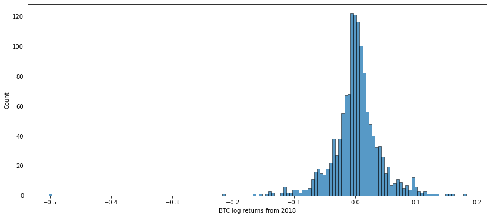
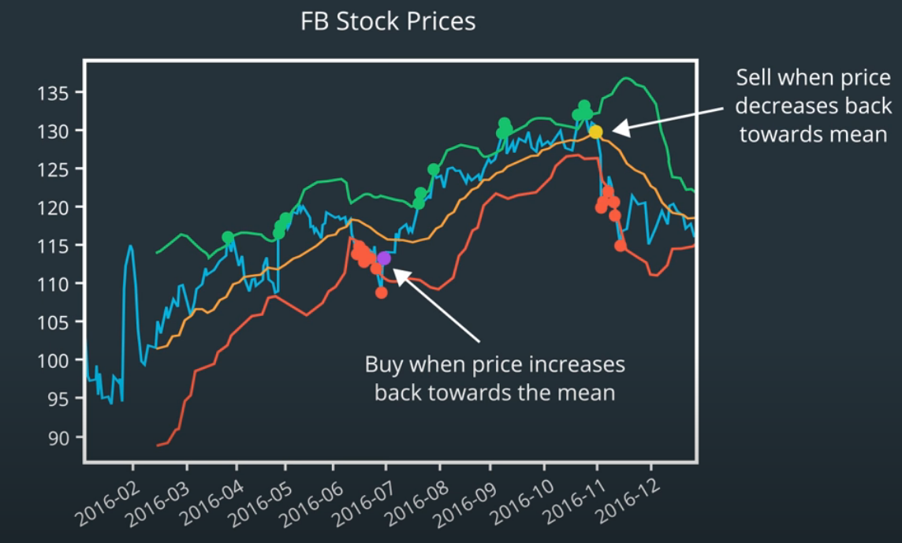

AI for Trading
Table of Contents
1 Financial Data
1.1 Data Types
1.1.1 Market Data
- Tick Data
- Quote Data: bid, bid size, ask, ask size
- Trade Data: last trade, volume
- OHLC: open, high, low, close
- Orderbook
- Transaction
1.1.2 Corporate Actions
- Stock Splits
- Cash Dividends: Partial cash distribution of company earnings.
- Symbol, Ex-Dividend Date, Dividend, Record Date, Announcement Date, Payment Date
- Adjusted Price Factor: \(1+D/S\) D: Dividend S: Stock price at ex-dividend date
- Divide the historical price by the adjusted price factor to normalize.
- …
1.1.3 Alternative Data
- Social Media Posts: can convey sentiment towards companies.
- News Articles: can shape investor opinion.
- Satellite Images: used to estimate crop yield.
- Consumer Data: can predict sales and revenue long before official announcements.
2 Fundamental Analysis
2.1 Data Sources
(usually updated every quarter)
- Balance Sheet
- Cash Flow Statements
2.2 PE ratio
Price to Earnings Ratio. It’s important to be careful about how we interpret a high or low PE ratio. The market price of a share is based on the collective estimates by investors of the company’s current equity plus its future earnings. The future earnings are based on estimates of future cash flow, which are then adjusted to their present-day value, or Present Value (PV).
- High PE ratio: A company may have low or negative earnings, but a high stock price due to the estimated future earnings.
- Low PE ratio: may be a company has high and stable earnings, but less expectations for future growth.
2.3 Other Key Factors
- Sales Per Share(Revenue is the same)
- Earnings Per Share
- Earnings gives investors a sense of how much the equity of the company has changed over the past 3 months.
- Dividends Per Share
2.4 Key Points
- Try to analyze a collection of different measures over time.
- Can be used as risk factors.
3 Returns
\[RawReturn(r) = \frac{p_t - p_{t-1}}{p_{t-1}}\] \[LogReturn(R) = ln(p_t/p_{t-1})\]
3.1 Relations between Raw and Log
\[R=ln(r+1)\] \[r=e^R-1\]
3.2 Continuous Compounding
- Compounding Formula
\[p_t=p_{t-1}(1+\frac{r}{n})^n\]
- Now make n bigger and bigger
\[\lim_{n \to \infty}(1+\frac{r}{n})^n=e^r\]
- Compounding infinitely often is called continuous compounding
\[100\times e^{0.04}=104.08\]
- Reverse the previous calculation
\[104.08/100=e^r\] \[r=ln(104.08/100)=0.04\]
- r is the continuously compounded return. It is just the log return
3.2.1 Additivity
Annual rate of continuous compounding is simply the sum of the monthly rates.
- invest $100 for two years with a monthly continuously compounded interest rate was 2%
\[100\times{e^{0.02}}\times{e^{0.02}}... = 100\times{e^{(0.02+0.02+...)}}=100\times{e^{0.24}}=127.12\]
- Time Additivity of Log Returns. log return for Jan and Feb = log return for Jan + log return for Feb
\[ln(\frac{p_{Mar 1}}{p_{Jan 1}}) = ln(\frac{p_{Mar 1}}{p_{Feb 1}}) + ln(\frac{p_{Feb 1}}{p_{Jan 1}})\]
3.2.2 Annualized Rate of Return
If we just had a single monthly rate, but we assumed that the rates for all the months of the year were the same, we could extrapolate the monthly rate to an annual rate by multiplying by 12. This is called annualizing the rate of continuous compounding.
3.3 Compounding
- rate of interest of 4%
| Compounding Frequency | Value of $100 after 1 year |
|---|---|
| Annually(n=1) | $104.00 |
| Quarterly(n=4) | $104.06 |
| Weekly(n=52) | $104.08 |
| Daily(n=252) | $104.08 |
3.4 Distribution of Returns
The conversation about the best model for the distribution of returns has been going on for at least the past century. The best model will depend on exactly what your analysis seeks to achieve. 
3.5 Why Log Returns?
- Log returns can be interpreted as continuously compounded returns.
- Log returns are time-additive. The multi-period log return is simply the sum of single period log returns.
- The use of log returns prevents security prices from becoming negative in models of security returns.
- log returns of a security can be reasonably modeled as distributed according to a normal distribution. ?
- When returns and log returns are small, their values are approximately equal.
- Logarithms can help make an algorithm more numerically stable.
4 Indicators
4.1 Overlap Studies
4.1.1 Bollinger Bands

4.2 Momentum Indicators
- moving averages
- large price movements with volume
- stocks making new highs
5 Trading Strategy
5.1 Alpha Research
- Observation: Find a pattern that seems to be recurring in the market over time.
- Turn the observation into an expression, both mathematically and programmatically.
- Use historical data to verify it.
- Define strategy in more detailed manner, then run full backtesting exercises.
5.2 Momentum Strategy Example
- Choose a stock universe (attention: avoid Survivorship Bias)
- Re-sample prices if needed, then compute log returns.
- Rank by returns, select top-n/bottom-n(cross-sectional analysis)
- Compute long and short portfolio returns
- Combine portfolio returns
5.2.1 Statistical Analysis
- Sample Monthly Mean Return: \(\bar{x}\)
- t-statistic: \(t=\frac{{\bar{x}-\mu_0}}{SE}=\frac{\bar{x}}{SE}\) (if the true mean month return \(\mu_0\) is 0)
- \(H_0\): \(\bar{x}=0\)
- \(H_A\): \(\bar{x}>0\)
- If P-Value \(\le\alpha\) level, then reject \(H_0\).
6 Terms
- Stock
- An asset that represents ownership in a company. A claim on part of a corportation's assets and earnings. There are two main types, common and preferred.
- Share
- A single share represents partial ownership of a company relative to the total number of shares in existence.
- Common Stock
- One main type of stock; entitles the owner to receive dividends and to vote at shareholder meetings.
- Preferred Stock
- The other main type of stock; generally does not entail voting rights, but entitles the owner to a higher claim on the assets and earnings of a company.
- Dividend
- A partial distribution of a company's profits to shareholders.
- Capital Gains
- Profits that result from the sale of an asset at a price higher than the purchase price.
- Security
- A tradable financial asset.
- Debt Security
- Money that is owed and must be repaid, like government or corporate bonds, or certificates of deposit. Also called fixed-income securities.
- Derivative Security
- A financial instrument whereby its value is derived from other assets.
- Equity
- The value of an owned asset minus the amount of all debts on that asset.
- Equity Security
- A security that represents fractional ownership in an entity, such as stock.
- Option Contract
- A contract which gives the buyer the right, but not the obligation, to buy or sell an underlying asset at a specified price on or by a specified date
- Futures Contract
- A contract that obligates the buyer to buy or the seller to sell an asset at a predetermined price at a specified time in the future
- Total Market Capitalization
- the dollar value of a company's outstanding shares.
- Inflection Point
- 拐点
- Cross-sectional Analysis
- Cross-sectional analysis looks at data collected at a single point in time, rather than over a period of time. OPP Time-series Analysis
- Data-snooping(P-hacking)
- the misuse of data analysis to find patterns in data by performing many statistical tests on the data and only reporting those that come back with significant results.
7 Stars
- Lesson 5
- Lesson 6
- Lesson 7
- 3. Log Returns
- 5. Distributions of Returns and Prices Video
- Lesson 8